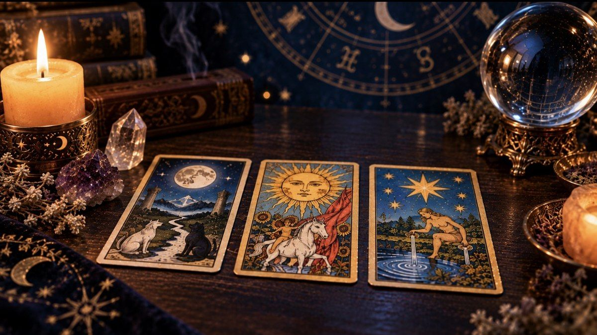

Los 22 Arcanos Mayores del Tarot y su significado

Los Arcanos Mayores son las 22 cartas que narran el llamado "Viaje del Loco": un recorrido simbólico desde la inocencia hasta la plenitud espiritual. Cuando aparecen en una tirada, suelen señalar los temas más profundos y determinantes de tu camino, por encima de los detalles cotidianos que reflejan los Arcanos Menores.
Del 0 al 10: el despertar
0. El Loco representa el inicio, el salto de fe hacia lo desconocido. I. El Mago habla de voluntad y potencial. II. La Sacerdotisa invita a escuchar la intuición. III. La Emperatriz y IV. El Emperador equilibran creación y estructura. V. El Hierofante remite a la tradición; VI. Los Enamorados, a las decisiones del corazón; VII. El Carro, a la determinación; VIII. La Fuerza, al coraje sereno; IX. El Ermitaño, a la introspección; y X. La Rueda de la Fortuna marca los giros inevitables del destino.
Del 11 al 21: la transformación
XI. La Justicia pide equilibrio y verdad; XII. El Colgado, rendirse a una nueva perspectiva; XIII. La Muerte no anuncia un final literal sino una transformación necesaria; XIV. La Templanza busca armonía; XV. El Diablo señala ataduras y tentaciones; XVI. La Torre derriba lo que ya no sostiene tu vida; XVII. La Estrella trae esperanza; XVIII. La Luna revela lo oculto en el subconsciente; XIX. El Sol irradia éxito y vitalidad; XX. El Juicio convoca a un renacer; y XXI. El Mundo cierra el ciclo con plenitud y logro.
Cómo reconocer su peso en una lectura
Cuando varios Arcanos Mayores aparecen juntos en una misma tirada, es una señal de que la pregunta toca algo estructural en tu vida — no un detalle pasajero, sino una lección que se repite hasta ser aprendida. En cambio, una tirada dominada por Arcanos Menores suele hablar de circunstancias más concretas y manejables del día a día.
Un mazo para acompañar el aprendizaje
Si estás memorizando estos significados, un mazo con las palabras clave impresas en cada carta es una herramienta enormemente práctica mientras desarrollas tu memoria intuitiva.
El origen del "Viaje del Loco"
La secuencia numerada del 0 al 21 no es casualidad: representa simbólicamente las etapas de la vida humana, desde la inocencia total (El Loco, sin número o con el 0) hasta la realización plena (El Mundo, XXI). Muchos estudiosos comparan esta estructura con los relatos iniciáticos de otras tradiciones espirituales, donde el protagonista atraviesa pruebas progresivas antes de alcanzar la sabiduría. Por eso, cuando en una lectura aparecen Arcanos Mayores consecutivos o cercanos en número, se interpreta como una señal de que estás en medio de una etapa de aprendizaje intensivo.
Numerología dentro del tarot
Cada Arcano Mayor también puede leerse a través de su número siguiendo la lógica numerológica: las cartas del 1 (El Mago) hablan de inicios, las del 9 (El Ermitaño) de cierres introspectivos, y así sucesivamente. Un dato curioso es que puedes sumar el número de tu camino de vida (ver nuestro artículo de numerología) con el número del Arcano que más se repite en tus lecturas para descubrir una conexión personal más profunda entre ambos sistemas.
Cartas del revés: una capa extra de significado
Además de su posición vertical, muchos lectores incorporan las cartas invertidas (que caen "al revés" al extraerlas) como una capa adicional de matices: en lugar de significar simplemente "lo opuesto", suelen indicar que la energía de esa carta está bloqueada, es interna en vez de externa, o necesita más tiempo para manifestarse. Es una práctica opcional — muchísimos tarotistas experimentados leen únicamente en posición vertical durante años antes de animarse a incorporar los reversos.
Lee también: por qué la carta de La Muerte simboliza transformación y no una muerte literal, en nuestra guía del Día de Muertos y Samhain.
¿Tienes una pregunta concreta? Saca una carta en nuestro tarot sí o no y descubre qué Arcano te responde.
✦ Pruébalo ahora Haz tu lectura de tarot gratis → Pon en práctica lo que acabas de leer con nuestra lectura de tarot online: Tarot del Día, Pasado-Presente-Futuro o Tarot del Amor, con las 78 cartas.
Los 22 Arcanos Mayores uno por uno: derecho, al revés y consejo
Esta es la guía rápida que más se consulta: para cada carta, su sentido cuando sale derecha, qué suele indicar cuando aparece invertida y una frase para llevar a la práctica. Son lecturas simbólicas de la tradición del tarot, no predicciones.
0. El Loco
Derecha: Nuevos comienzos, espontaneidad, confianza en el camino. Invertida: Imprudencia, miedo a dar el paso o decisiones sin pensar. Pregunta clave: ¿qué harías si no tuvieras miedo a equivocarte?
I. El Mago
Derecha: Voluntad, recursos a tu alcance, iniciativa. Invertida: Talento sin dirección, dispersión o promesas que no se cumplen. Reúne lo que ya tienes antes de buscar fuera.
II. La Sacerdotisa
Derecha: Intuición, silencio, información que aún no se ha revelado. Invertida: Ignorar la corazonada o guardar secretos que pesan. Espera antes de actuar: aún falta información.
III. La Emperatriz
Derecha: Creatividad, abundancia, cuidado y disfrute. Invertida: Sobreprotección, bloqueo creativo o descuido propio. Cuida lo que quieres que crezca.
IV. El Emperador
Derecha: Estructura, autoridad, límites claros. Invertida: Rigidez, control excesivo o falta de disciplina. Ordena lo que está desordenado.
V. El Hierofante
Derecha: Tradición, aprendizaje, guía de alguien con experiencia. Invertida: Cuestionar normas heredadas; seguir tu propio criterio. Busca un mentor o revisa tus creencias.
VI. Los Enamorados
Derecha: Elecciones del corazón, vínculos, valores compartidos. Invertida: Dudas, desequilibrio en la pareja o decisión aplazada. Elige desde tus valores, no desde la presión.
VII. El Carro
Derecha: Determinación, avance, dominio de fuerzas opuestas. Invertida: Falta de rumbo o energía mal dirigida. Define la meta y empuja en una sola dirección.
VIII. La Fuerza
Derecha: Coraje sereno, paciencia, dominio de uno mismo. Invertida: Inseguridad o impulsos que se imponen. La suavidad también es poder.
IX. El Ermitaño
Derecha: Introspección, pausa, sabiduría propia. Invertida: Aislamiento excesivo o negarse a pedir ayuda. Dedica un rato al silencio esta semana.
X. La Rueda de la Fortuna
Derecha: Ciclos, cambios de suerte, oportunidades que giran. Invertida: Resistencia al cambio o sensación de mala racha. Nada dura siempre; aprovecha el movimiento.
XI. La Justicia
Derecha: Equilibrio, verdad, consecuencias justas. Invertida: Injusticia, evasión de responsabilidades. Sé honesto con los hechos.
XII. El Colgado
Derecha: Pausa voluntaria, nueva perspectiva, rendición. Invertida: Estancamiento o sacrificio sin sentido. Mira el problema desde otro ángulo.
XIII. La Muerte
Derecha: Cierre de etapa, transformación necesaria. Invertida: Aferrarse a lo que ya terminó. Suelta para que algo nuevo tenga espacio.
XIV. La Templanza
Derecha: Armonía, moderación, paciencia. Invertida: Excesos o desequilibrio entre áreas de tu vida. Busca el punto medio, no el extremo.
XV. El Diablo
Derecha: Ataduras, apegos, deseos que nos atrapan. Invertida: Liberación, tomar conciencia de una dependencia. Nombra lo que te ata: ya es el primer paso.
XVI. La Torre
Derecha: Ruptura repentina, verdades que caen, liberación. Invertida: Cambio evitado o crisis que se alarga. Lo que cae suele ser lo que ya no sostenía.
XVII. La Estrella
Derecha: Esperanza, renovación, serenidad tras la tormenta. Invertida: Desánimo o pérdida de fe en uno mismo. Cuida tu energía y confía en el proceso.
XVIII. La Luna
Derecha: Intuición, sueños, miedos que no se ven con claridad. Invertida: Confusión que se disipa o ansiedad acumulada. No decidas desde el miedo; espera a ver claro.
XIX. El Sol
Derecha: Alegría, vitalidad, claridad, éxito. Invertida: Optimismo exagerado o logro que tarda. Celebra lo que sí funciona.
XX. El Juicio
Derecha: Llamada interior, renacer, balance de lo vivido. Invertida: Autocrítica excesiva o dudar de tu llamado. Perdónate para poder avanzar.
XXI. El Mundo
Derecha: Cierre con plenitud, logro, integración. Invertida: Un ciclo casi terminado que pide un último paso. Reconoce lo recorrido antes de empezar de nuevo.
Si quieres ver cómo se combinan en una tirada real, prueba el tarot online gratis con las 78 cartas o empieza con una tirada de tres cartas.
Preguntas frecuentes
¿Cuál es la diferencia entre arcanos mayores y arcanos menores?
Los arcanos mayores son 22 cartas que reflejan grandes temas y momentos de cambio vitales. Los menores, 56 cartas divididas en cuatro palos, hablan de situaciones cotidianas: trabajo, emociones, conflictos o dinero.
¿Qué significa El Loco, la carta número 0?
El Loco simboliza los comienzos, la espontaneidad y el salto de fe hacia lo desconocido. Invita a confiar y a arriesgarse, aunque también puede advertir de imprudencia si aparece en un contexto de impulsividad. Como en todo el tarot, su lectura depende de la pregunta y de las cartas que lo acompañan en la tirada.
¿La carta de La Muerte significa que va a morir alguien?
No. En el tarot, La Muerte representa transformación, cierre de ciclos y renovación, no un fallecimiento literal. Suele hablar de dejar atrás algo para dar paso a una etapa nueva. Es una de las cartas más malinterpretadas de los arcanos mayores, por eso conviene leerla siempre dentro del conjunto de la tirada.
¿Cambia el significado de un arcano mayor si sale invertido?
Depende de la tradición del lector. Muchos interpretan la carta invertida como una energía bloqueada, retrasada o vivida de forma interna; otros leen todas las cartas en posición normal. No hay una única regla universal. Lo recomendable es fijar un criterio y mantenerlo para que tus lecturas sean coherentes entre sí.
¿Los arcanos mayores predicen el futuro con certeza?
No de forma garantizada. Muchas personas usan los arcanos mayores como herramienta de reflexión y orientación para entender su momento actual, ordenar ideas y plantearse posibilidades. No sustituyen el consejo profesional médico, legal o financiero. Te recomendamos tomarlos como una guía simbólica y decidir siempre con tu propio criterio.
¿Qué te pareció este artículo? Cuéntanos tu experiencia.
¡Gracias por tu comentario!